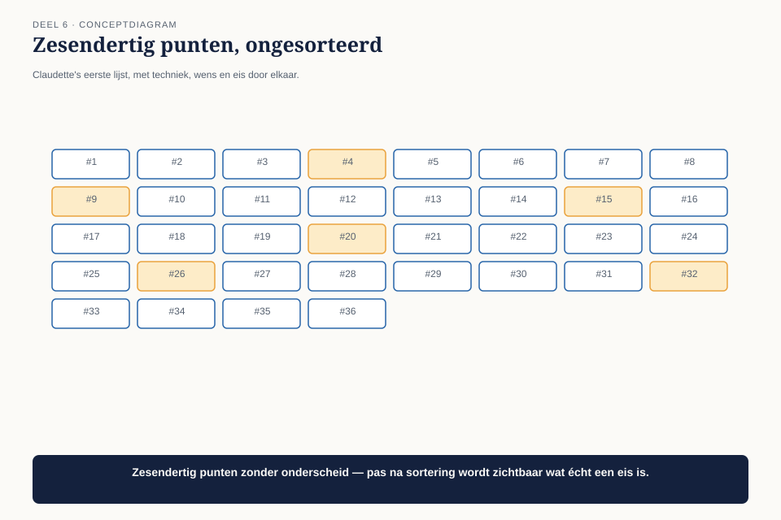
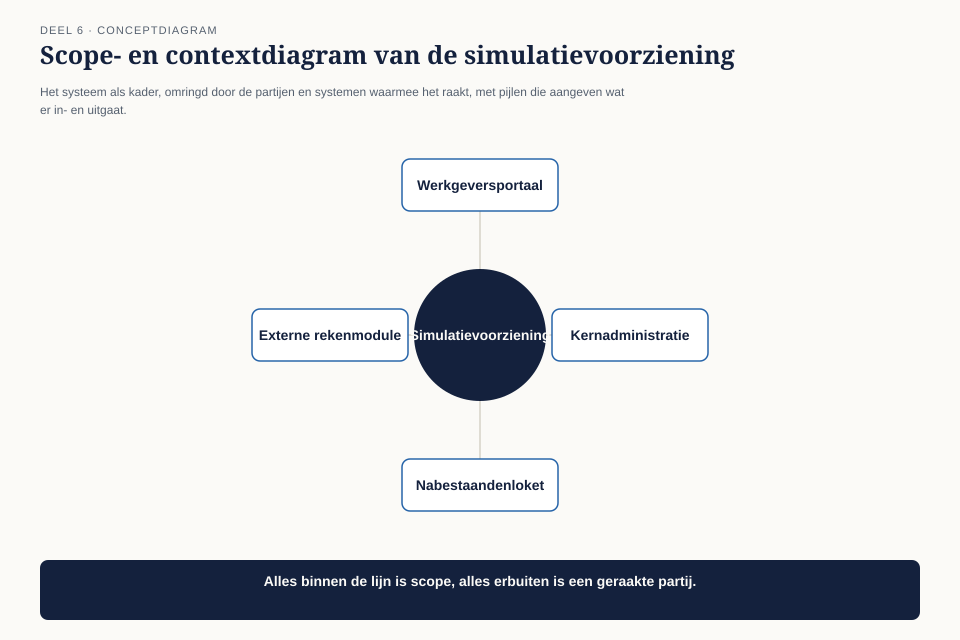

Deel 6 — Design I: requirements en scope
Slidedeck · Ductus-cursus BTABoK · Niveau 1 · deel 6 van 30 · 30 slides
Slide 1 — Titel: Design I
Deel 6 — requirements en scope
Ductus
Slide 2 — Agenda: Vanmorgen
- De nieuwe opdracht
- Requirement of oplossing
- Scope en context
- Decompositie en hergebruik
- Ontwerpmethoden kiezen
- Terug naar de opdracht
Slide 3 — Sectie: 1. De nieuwe opdracht
Slide 4 — Bullets: De simulatievoorziening
- Deelnemers laten zien wat hun pensioenkeuze betekent
- Claudette’s eerste stap: een lijst
- Zesendertig punten binnen een uur
Slide 5 — Figuur: De lijst

Slide 6 — Citaat: Wat moet dit systeem eigenlijk kunnen dat het huidige portaal niet kan?
Wat moet dit systeem eigenlijk kunnen dat het huidige portaal niet kan?
— de projectmanager
Slide 7 — Statement: Ze kon het niet in één zin beantwoorden
Slide 8 — Sectie: 2. Requirement of oplossing
Slide 9 — Bullets: Het onderscheid
- Requirement: wat het systeem moet bereiken
- Oplossing: hoe
- “Moet een grafiek tonen” — dat is een oplossing die zich voordoet als requirement
Slide 10 — Tabel: De waarom-toets
| Wat er stond | Waarom → Waarom | Echte requirement |
|---|---|---|
| “Grafiek tonen” | ziet effect → weloverwogen keuze | deelnemer kan gevolgen beoordelen vóór de keuze |
Slide 11 — Statement: Zodra de echte requirement op tafel ligt
Ontstaat er ruimte voor meerdere oplossingen
Slide 12 — Opdracht: Opdracht 1 — De waarom-toets
15 minuten, individueel
Zes requirementspunten · vraag “waarom” tot je bij een gebruikersbehoefte uitkomt
Slide 13 — Sectie: 3. Scope en context
Slide 14 — Figuur: Drie lagen

Slide 15 — Bullets: De laag die het vaakst ontbreekt
- Binnen scope: wat het systeem zelf doet
- Buiten scope, geraakt: waarmee het uitwisselt
- Expliciet buiten scope: bewust uitgesloten, mét reden
- Zonder die derde laag: geen afbakening, een wensenlijst met een losse rand
Slide 16 — Opdracht: Opdracht 2 — Je eigen scopediagram
25 minuten, individueel
Drie lagen invullen voor een eigen systeem · teken het diagram
Slide 17 — Sectie: 4. Decompositie en hergebruik
Slide 18 — Statement: Decomponeer langs de lijnen waarlangs dingen apart veranderen
Niet langs hoe ze toevallig gebouwd zijn
Slide 19 — Figuur: Twee decomposities

Slide 20 — Bullets: Bij de simulatievoorziening
- Rekenmodel wijzigt door wetgeving
- Presentatie wijzigt door gebruikerswensen
- Scheid ze langs die lijn — niet langs “rekenmodule / grafiekmodule”
Slide 21 — Opdracht: Opdracht 3 — Decomponeren langs veranderreden
20 minuten, tweetallen
Technische opdeling vs. opdeling langs veranderreden · waar wijken ze af?
Slide 22 — Sectie: 5. Ontwerpmethoden kiezen
Slide 23 — Tabel: Drie situaties
| Situatie | Aanpak |
|---|---|
| Probleem begrepen, oplossing niet | verken eerst alternatieven |
| Oplossing voor de hand liggend, probleem niet | terug naar de requirement |
| Probleem in beweging | kleine, snel herzienbare versie |
Slide 24 — Statement: De meest gemaakte fout:
situatie 2 behandelen als situatie 1
Slide 25 — Opdracht: Opdracht 4 — Welke situatie, welke aanpak
15 minuten, individueel
Vier gevallen, waaronder: “iets met AI doen”
Slide 26 — Sectie: 6. Terug naar de opdracht
Slide 27 — Tabel: Claudette's herschreven aanpak
| Requirement | gevolgen beoordelen vóór een onomkeerbare keuze |
|---|---|
| Scope | rekenen + tonen + bewaren; buiten scope: fiscaal advies, externe potten |
| Decompositie | rekenlogica los van presentatielogica |
| Methode | situatie 2 — terug naar de requirement, ondanks tijdsdruk |
Slide 28 — Statement: Van 36 punten naar 1 requirement, 1 diagram, 1 vraag
Slide 29 — Bullets: Wat dit deel niet afsluit
- Er sluit hier geen observatie
- Dit is het fundament voor deel 7
- Wie legt straks vast waaróm dit besluit is genomen, en niet een ander?
Slide 30 — Titel: Volgende keer
Deel 7 — Design II: architectuurbeschrijving en besluitvorming
Dat wordt O6.